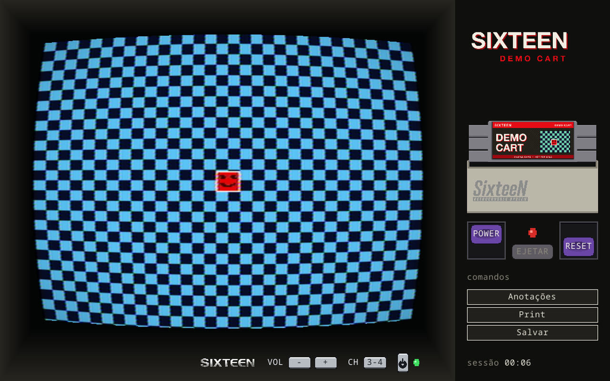
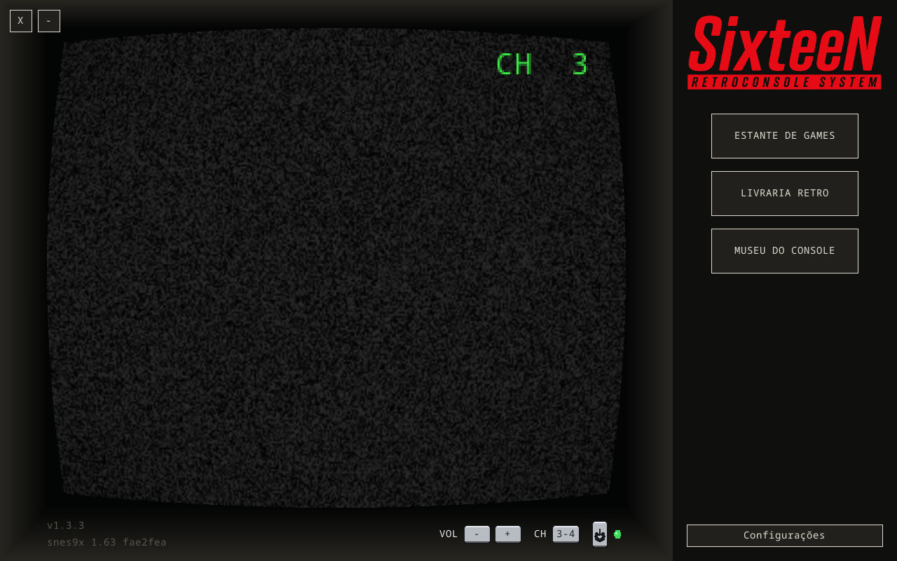
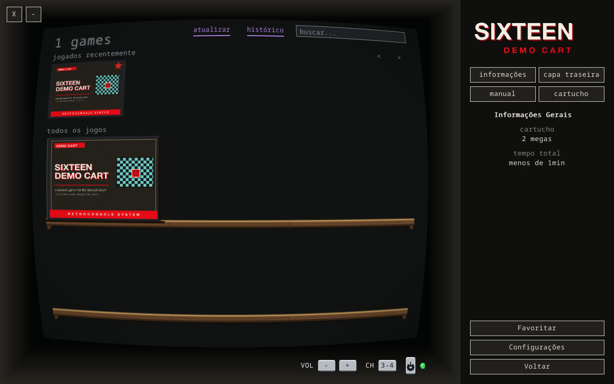
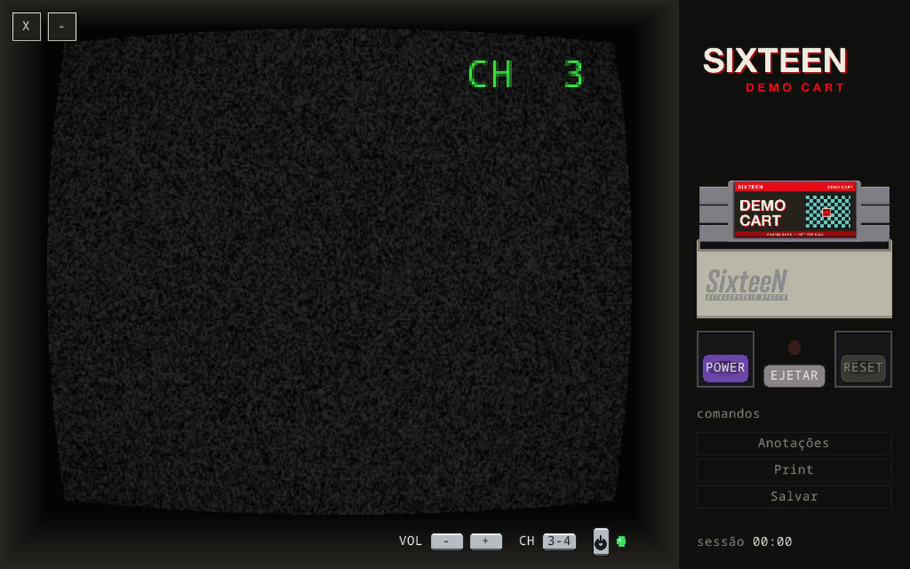
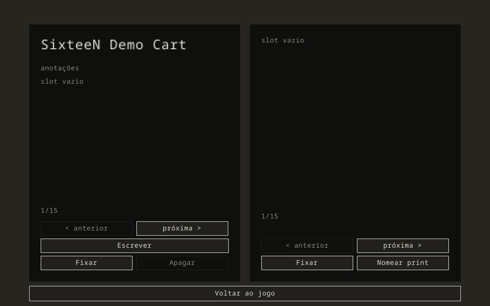
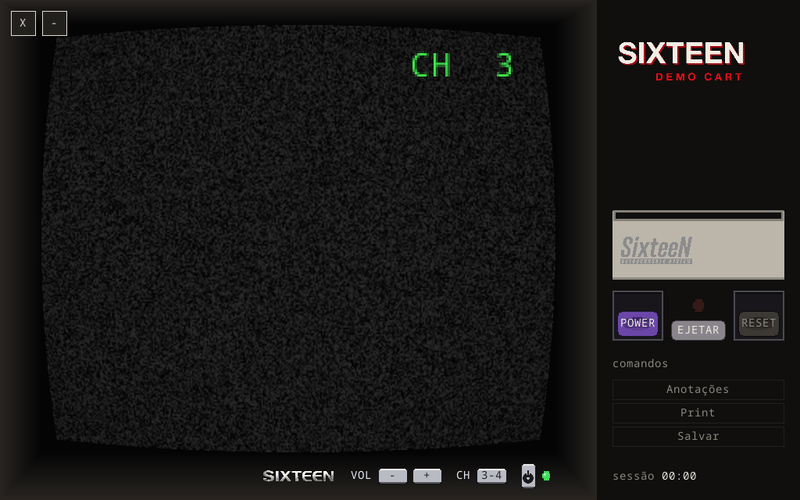

presskit
Um console de Super Nintendo inteiro na sua TV — gabinete, tubo CRT e cartucho de verdade.

Sobre
SixteeN é um frontend de console para o emulador snes9x. Em vez de só uma janela com o jogo, mostra o aparelho: gabinete desenhado em pixel art, tubo CRT com filtro NTSC RF, painel lateral com logo, cartucho no slot e chaves Power e Reset. Escolher um jogo na estante insere o cartucho de verdade — e o console só liga quando você aperta Power.
Inclui estante com busca, favoritos e tempo de jogo, manual em PDF dentro da TV, livro de anotações com cheats e prints, save states e integração com o RetroAchievements. Tudo é portátil e local: sem banco de dados, sem nuvem, sem telemetria. SixteeN não é um emulador novo — quem emula é o snes9x, baixado e atualizado pelo próprio app.
in english
SixteeN is a console front-end for the snes9x emulator that puts the whole Super Nintendo on screen — pixel-art cabinet, CRT tube with NTSC RF filtering, a side panel with game logo, cartridge slot and purple Power/Reset switches. Picking a game seats a real cartridge animation, and the console only boots when you press Power. It adds a game shelf with playtime tracking, in-TV PDF manuals, a notebook for cheats and screenshots, save states and RetroAchievements. Fully portable and local: no database, no cloud, no telemetry. It is not a new emulator — snes9x does the emulation, downloaded and updated by the app.
Ficha técnica
| Tipo | Frontend de console para emulador (não é um emulador novo) |
|---|---|
| Console | Super Nintendo / Super Famicom |
| Emulação | snes9x via libretro — baixado pelo app, nunca distribuído |
| Versão atual | 1.3.3 |
| Plataformas | macOS (Apple silicon, 12+), Windows 10+, Linux x86_64 (AppImage, Flatpak), Steam Deck |
| Tecnologia | Rust + SDL3 (embutida nos pacotes) |
| Controles | Mouse e gamepad; teclado só para anotações |
| Licença | MIT (código); o snes9x tem licença própria não comercial |
| Preço | Gratuito, sem fins comerciais |
| Autor | Ticiano Corral |
| Idiomas | Português (BR) e inglês |


Telas
Prints reais do app, feitos com o SixteeN Demo Cart (jogo e arte de exemplo): nenhum jogo ou capa comercial aparece. Nenhuma ROM ou núcleo é distribuído com o app.











Uso e contato
uso das imagens
Textos e imagens podem ser usados livremente em matérias, listas e vídeos sobre o SixteeN; peço o crédito “SixteeN / Ticiano Corral”. Marcas de terceiros (Nintendo, Sony, snes9x, PCSX ReARMed, RetroAchievements) pertencem aos seus donos.